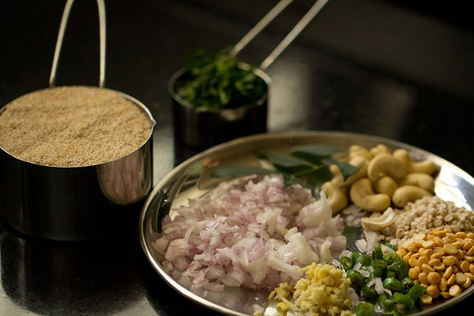
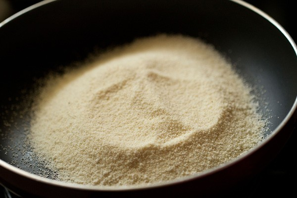
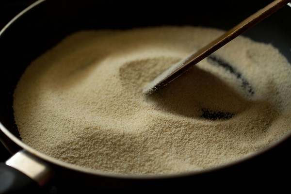
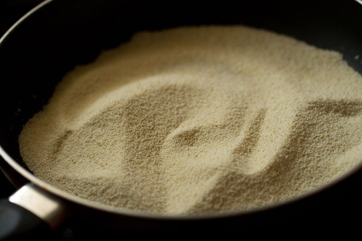
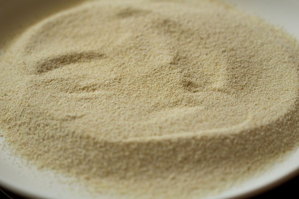
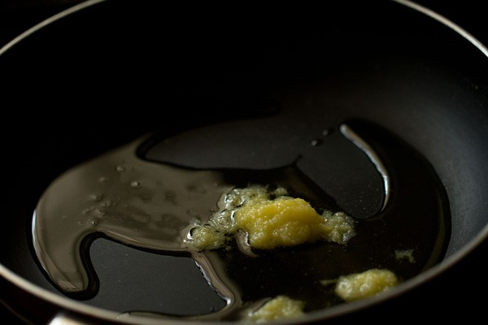
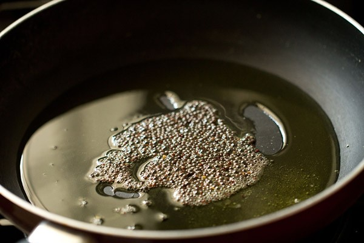

Prep the ingredients first. Take 1 cup rava (fine variety), ⅓ cup finely chopped onions, 1 teaspoon chopped green chillies, 1 teaspoon finely chopped ginger and 2 tablespoons coriander leaves (cilantro). Also take 8 to 10 curry leaves, 10 to 12 cashews, 1 teaspoon chana dal and 1 teaspoon urad dal.
Heat a pan or kadai first. Add 1 cup rava or cream of wheat (fine variety).
Begin to roast the rava. Stir often while roasting the rava.
The rava or sooji grains should become fragrant and start to look dry, separate and crisp. Don’t brown the rava.
Once the rava becomes fragrant and starts to look dry and crisp, switch off the flame and put the roasted rava on a plate and set aside.
Frying and Sauteing
In a pan, heat 2 tablespoons ghee (clarified butter) or oil. You could use sunflower oil or peanut oil or safflower oil or any neutral tasting oil
Lower the heat. Add 1 teaspoon mustard seeds. When you hear the crackling sound of mustard seeds, it means they are getting fried.
Now add the ½ teaspoon cumin seeds along with 1 teaspoon chana dal (husked and split bengal gram) and 1 teaspoon urad dal (husked and split black gram).

Stirring often fry until the chana dal and urad dal begin to brown a bit.

Immediately add 10 to 12 cashews and begin to fry on a low to medium-low heat.

By the time the cashews get golden the dals should also be golden.

Now add the finely chopped onions.

Sauté the onions until they soften and become translucent on a low to medium-low heat.

Then add the chopped green chillies, ginger and curry leaves. You can also add 1 dried red chilli at this step.

Mix well & sauté for a few seconds.

Boiling Water
Then add 2.5 cups water to this mixture.

Add salt as required. Mix well and check the taste of water. It should be a bit salty but not too much. In case if the salt becomes less in the dish, you can always sprinkle some salt from the top when eating.

Then add 1 teaspoon sugar. Sugar is optional and you can skip it. We prefer a slight sweet taste in the upma and hence we add it.

Stir again. On a medium to high flame, heat the water and let it come to a rolling boiling.

Making Upma
When the water comes to a rolling boil, lower the flame to its lowest. Then add the rava in 4 to 5 batches with a spoon.

Once you add the first batch of rava, stir and mix immediately so that the roasted rava gets mixed evenly with the water.

Then add the next batch of rava. Mix and stir again very well ensuring that the batch of rava is mixed evenly in water.

Continue to add and stir the rava up to the last batch.

Quickly stir and mix very well. The rava grains will absorb water, swell and get cooked.

Cover and allow the rava upma to steam for 2 to 3 minutes on a low heat.

Then switch off the heat. In the below photo, the rava is cooked well and the upma is ready.

Lastly add about 2 tablespoons chopped coriander leaves (cilantro). You can add more coriander leaves if you like.

Mix again.

Serve upma hot with slices of lemon. I also sprinkle some sev (fried gram flour vermicelli) on upma while serving. Though this is not the way upma is traditionally served, the folks at home prefer this Mumbai style. You can also serve it with coconut chutney or lemon pickle or idli podi.